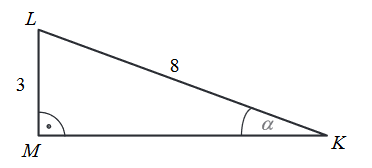
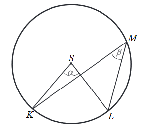
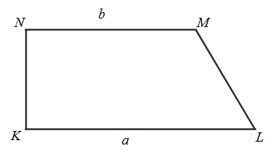
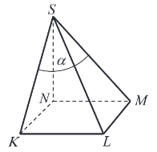
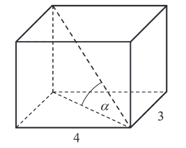
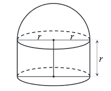
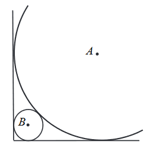
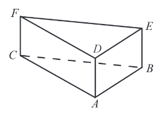

Matura 2018 maj
Liczba \(2\log_36-\log_34\) jest równa
A.\( \log_38 \)
B.\( 2\log_32 \)
C.\( 4 \)
D.\( 2 \)
D
Liczba \(\sqrt[3]{\frac{7}{3}}\cdot \sqrt[3]{\frac{81}{56}}\) jest równa
A.\( \frac{3}{2} \)
B.\( \frac{9}{4} \)
C.\( \frac{\sqrt{3}}{2} \)
D.\( \frac{3}{2\sqrt[3]{21}} \)
A
Dane są liczby \(a=3{,}6\cdot 10^{-12}\) oraz \(b=2{,}4\cdot 10^{-20}\). Wtedy
iloraz \(\frac{a}{b}\) jest równy
A.\( 8{,}64\cdot 10^{-32} \)
B.\( 8{,}64\cdot 10^{32} \)
C.\( 1{,}5\cdot 10^{-8} \)
D.\( 1{,}5\cdot 10^{8} \)
D
Cena roweru po obniżce o \(15\%\) była równa \(850\) zł. Przed obniżką ten rower
kosztował
A.\( 1000,00 \) zł
B.\( 977,50 \) zł
C.\( 865,00 \) zł
D.\( 850,15 \) zł
A
Zbiorem wszystkich rozwiązań nierówności \(\frac{1-2x}{2}\gt \frac{1}{3}\) jest
przedział
A.\( \Biggl( \frac{1}{6}, +\infty \Biggl) \)
B.\( \Biggl( \frac{2}{3}, +\infty \Biggl) \)
C.\( \Biggl( -\infty ,\frac{1}{6} \Biggl) \)
D.\( \Biggl( -\infty ,\frac{2}{3} \Biggl) \)
C
Funkcja kwadratowa jest określona wzorem \(f(x) = -2(x+3)(x-5)\). Liczby \(x_1\),
\(x_2\) są różnymi miejscami zerowymi funkcji \(f\). Zatem
A.\( x_1 + x_2 = -8 \)
B.\( x_1 + x_2 = 8 \)
C.\( x_1 + x_2 = -2\)
D.\( x_1 + x_2 = 2 \)
D
Równanie \(\frac{x^2 + 2x}{x^2 - 4} = 0\)
A.ma dwa rozwiązania: \(x = 0, x = -2\)
B.ma jedno rozwiązanie: \( x = 0 \)
C.ma dwa rozwiązania: \( x = -2, x = 2 \)
D.ma trzy rozwiązania: \( x = -2, x = 0, x = 2 \)
B
Funkcja liniowa \(f\) określona jest wzorem \(f(x) = \frac{1}{3}x - 1\), dla
wszystkich liczb rzeczywistych \(x\). Wskaż zdanie prawdziwe.
A.Funkcja \(f\) jest rosnąca i jej wykres przecina oś \(Oy\) w punkcie \(P = \Biggl(
0, \frac{1}{3} \Biggl) \).
B.Funkcja \(f\) jest rosnąca i jej wykres przecina oś \(Oy\) w punkcie \(P = ( 0,
-1) \).
C.Funkcja \(f\) jest malejąca i jej wykres przecina oś \(Oy\) w punkcie \(P =
\Biggl( 0, \frac{1}{3} \Biggl) \).
D.Funkcja \(f\) jest malejąca i jej wykres przecina oś \(Oy\) w punkcie \(P = ( 0,
-1) \).
B
Wykresem funkcji kwadratowej \(f(x) = x^2 - 6x - 3\) jest parabola, której
wierzchołkiem jest punkt o współrzędnych
A.\( (-6, 69) \)
B.\( (-6, -3) \)
C.\( (6, -3) \)
D.\( (3, -12) \)
D
Liczba \(1\) jest miejscem zerowym funkcji liniowej \(f(x) = ax + b\), a punkt \(M
= (3, -2)\) należy do wykresu tej funkcji. Współczynnik \(a\) we wzorze tej funkcji jest równy
A.\( 1 \)
B.\( \frac{3}{2} \)
C.\( -\frac{3}{2} \)
D.\( -1 \)
D
Dany jest ciąg \((a_n)\) określony wzorem \(a_n = \frac{5 - 2n}{6}\) dla \(n\ge
1\). Ciąg ten jest
A.arytmetyczny i jego różnica jest równa \( r = -\frac{1}{3} \).
B.arytmetyczny i jego różnica jest równa \( r = -2 \).
C.geometryczny i jego iloraz jest równy \( q = -\frac{1}{3} \).
D.geometryczny i jego iloraz jest równy \( q = \frac{5}{6} \).
A
Dla ciągu arytmetycznego \((a_n)\), określonego dla \(n\ge1\), jest spełniony
warunek \(a_4 + a_5 + a_6 = 12\). Wtedy
A.\( a_5 = 4 \)
B.\( a_5 = 3 \)
C.\( a_5 = 6 \)
D.\( a_5 = 5 \)
A
Dany jest ciąg geometryczny \((a_n)\), określony dla \(n\ge1\), w którym \(a_1 =
\sqrt{2}\), \(a_2 = 2\sqrt{2}\), \(a_3 = 4\sqrt{2}\). Wzór na \(n\)-ty wyraz tego ciągu ma postać
A.\( a_n = \bigl(\sqrt{2}\bigl)^n \)
B.\( a_n = \Biggl(\frac{\sqrt{2}}{2}\Biggl)^n \)
C.\( a_n = \frac{2^n}{\sqrt{2}} \)
D.\( a_n = \frac{\bigl(\sqrt{2}\bigl)^n}{2} \)
C
Przyprostokątna \(LM\) trójkąta prostokątnego \(KLM\) ma długość \(3\), a przeciwprostokątna
\(KL\) ma długość \(8\) (zobacz rysunek).
Wtedy miara \(α\) kąta ostrego \(LKM\) tego trójkąta spełnia warunek

A.\( 27^\circ\lt\alpha\le 30^\circ \)
B.\( 24^\circ\lt\alpha\le 27^\circ \)
C.\( 21^\circ\lt\alpha\le 24^\circ \)
D.\( 18^\circ\lt\alpha\le 21^\circ \)
C
Dany jest trójkąt o bokach długości: \(2\sqrt{5}\), \(3\sqrt{5}\), \(4\sqrt{5}\).
Trójkątem podobnym do tego trójkąta jest trójkąt, którego boki mają długości
A.\( 10, 15, 20 \)
B.\( 20, 45, 80 \)
C.\( \sqrt{2}, \sqrt{3}, \sqrt{4} \)
D.\( \sqrt{5}, 2\sqrt{5}, 3\sqrt{5} \)
A
Dany jest okrąg o środku \(S\). Punkty \(K\), \(L\) i \(M\) leżą na tym okręgu. Na
łuku \(KL\) tego okręgu są oparte kąty \(KSL\) i \(KML\) (zobacz rysunek), których miary \(α\) i
\(β\) spełniają warunek \(α + β = 111^\circ\). Wynika stąd, że 
A.\( \alpha = 74^\circ \)
B.\( \alpha = 76^\circ \)
C.\( \alpha = 70^\circ \)
D.\( \alpha = 72^\circ \)
A
Dany jest trapez prostokątny \(KLMN\), którego podstawy mają długości \(|KL| = a\),
\(|MN| = b\), \(a\gt b\). Kąt \(KLM\) ma miarę \(60^\circ\). Długość ramienia \(LM\) tego trapezu
jest równa 
A.\( a - b \)
B.\( 2(a - b) \)
C.\( a + \frac{1}{2}b \)
D.\( \frac{a + b}{2} \)
B
Punkt \(K = (2, 2)\) jest wierzchołkiem trójkąta równoramiennego \(KLM\), w którym
\(|KM| = |LM|\). Odcinek \(MN\) jest wysokością trójkąta i \(N = (4, 3).\) Zatem
A.\( L = (5, 3) \)
B.\( L = (6, 4) \)
C.\( L = (3, 5) \)
D.\( L = (4, 6) \)
B
Proste o równaniach \(y = (m + 2)x + 3\) oraz \(y = (2m - 1)x - 3\) są równoległe,
gdy
A.\( m = 2 \)
B.\( m = 3 \)
C.\( m = 0 \)
D.\( m = 1 \)
B
Podstawą ostrosłupa jest kwadrat \(KLMN\) o boku długości \(4\). Wysokością tego ostrosłupa jest
krawędź \(NS\), a jej długość też jest równa \(4\) (zobacz rysunek).
 Kąt \(α\), jaki tworzą krawędzie
\(KS\) i \(MS\), spełnia warunek
A.\( \alpha = 45^\circ \)
B.\( 45^\circ\lt \alpha \lt 60^\circ \)
C.\( \alpha\gt 60^\circ \)
D.\( \alpha = 60^\circ \)
D
Podstawą graniastosłupa prostego jest prostokąt o bokach długości \(3\) i \(4\). Kąt \(α\), jaki
przekątna tego graniastosłupa tworzy z jego podstawą, jest równy \(45^\circ\) (zobacz rysunek).

Wysokość graniastosłupa jest równa
A.\( 5 \)
B.\( 3\sqrt{2} \)
C.\( 5\sqrt{2} \)
D.\( \frac{5\sqrt{3}}{3} \)
A
Na rysunku przedstawiono bryłę zbudowaną z walca i półkuli. Wysokość walca jest
równa \(r\) i jest taka sama jak promień półkuli oraz taka sama jak promień podstawy walca. 
Objętość tej bryły jest równa
A.\( \frac{5}{3}\pi r^3 \)
B.\( \frac{4}{3}\pi r^3 \)
C.\( \frac{2}{3}\pi r^3 \)
D.\( \frac{1}{3}\pi r^3 \)
A
W zestawie \(\underbrace{2,2,2,...,2}_{m \text{ liczb}}, \underbrace{4,4,4,...,4}_{m \text{
liczb}}\) jest \(2m\) liczb \((m\ge1)\), w tym \(m\) liczb \(2\) i \(m\) liczb \(4\).
Odchylenie standardowe tego zestawu liczb jest równe
A.\( 2 \)
B.\( 1 \)
C.\( \frac{1}{\sqrt{2}} \)
D.\( \sqrt{2} \)
B
Ile jest wszystkich liczb naturalnych czterocyfrowych mniejszych od \(2018\) i
podzielnych przez \(5\)?
A.\( 402 \)
B.\( 403 \)
C.\( 203 \)
D.\( 204 \)
D
W pudełku jest \(50\) kuponów, wśród których jest \(15\) kuponów przegrywających, a
pozostałe kupony są wygrywające. Z tego pudełka w sposób losowy wyciągamy jeden kupon.
Prawdopodobieństwo zdarzenia polegającego na tym, że wyciągniemy kupon wygrywający, jest równe
A.\( \frac{15}{35} \)
B.\( \frac{1}{50} \)
C.\( \frac{15}{50} \)
D.\( \frac{35}{50} \)
D
Rozwiąż nierówność \(2x^2 - 3x \gt 5\).
\(x \in (\infty , -1) \cup \biggl(2\frac{1}{2}, +\infty \biggl)\)
Rozwiąż równanie \(\bigl(x^3 + 125 \bigl)\bigl(x^2 - 64\bigl) = 0\).
\(x \epsilon \{-8, -5, 8\}\)
Udowodnij, że dla dowolnych liczb dodatnich \(a\), \(b\) prawdziwa jest nierówność
\(\frac{1}{2a} + \frac{1}{2b} \ge \frac{2}{a + b}\).
Okręgi o środkach odpowiednio \(A\) i \(B\) są styczne zewnętrznie i każdy z nich jest styczny do
obu ramion danego kąta prostego (zobacz rysunek). Promień okręgu o środku \(A\) jest równy
\(2\).

Uzasadnij, że promień okręgu o środku \(B\) jest mniejszy od \(\sqrt{2} - 1\).
Do wykresu funkcji wykładniczej, określonej dla każdej liczby rzeczywistej \(x\)
wzorem \(f(x) = a^x\) (gdzie \(a \gt 0\) i \(a \ne 1\)), należy punkt \(P = (2, 9)\). Oblicz \(a\) i
zapisz zbiór wartości funkcji \(g\), określonej wzorem \(g(x) = f(x) - 2\).
\(a = 3\), zbiór wartości: \((-2, +\infty )\)
Dwunasty wyraz ciągu arytmetycznego \((a_n)\), określonego dla \(n \ge 1\), jest
równy \(30\), a suma jego dwunastu początkowych wyrazów jest równa \(162\). Oblicz pierwszy wyraz
tego ciągu.
\(a_1 = -3\)
W układzie współrzędnych punkty \(A = (4,3)\) i \(B = (10, 5)\) są wierzchołkami
trójkąta \(ABC\). Wierzchołek \(C\) leży na prostej o równaniu \(y = 2x + 3\). Oblicz współrzędne
punktu \(C\), dla którego kąt \(ABC\) jest prosty.
\(C = \biggl( 6\frac{2}{5}, 15\frac{4}{5}\biggl)\)
Dane są dwa zbiory: \(A = \{100, 200, 300, 400, 500, 600, 700\}\) i \(B = \{10, 11,
12, 13, 14, 15, 16\}\). Z każdego z nich losujemy jedną liczbę. Oblicz prawdopodobieństwo zdarzenia
polegającego na tym, że suma wylosowanych liczb będzie podzielna przez \(3\). Obliczone
prawdopodobieństwo zapisz w postaci nieskracalnego ułamka zwykłego.
\(P(A) = \frac{16}{49}\)
Dany jest graniastosłup prawidłowy trójkątny (zobacz rysunek). Pole powierzchni
całkowitej tego graniastosłupa jest równe \(45\sqrt{3}\). Pole podstawy graniastosłupa jest równe
polu jednej ściany bocznej. Oblicz objętość tego graniastosłupa. 
\(a = 6\), \(H = \frac{3\sqrt{3}}{2}\), \(V = 40\frac{1}{2}\)